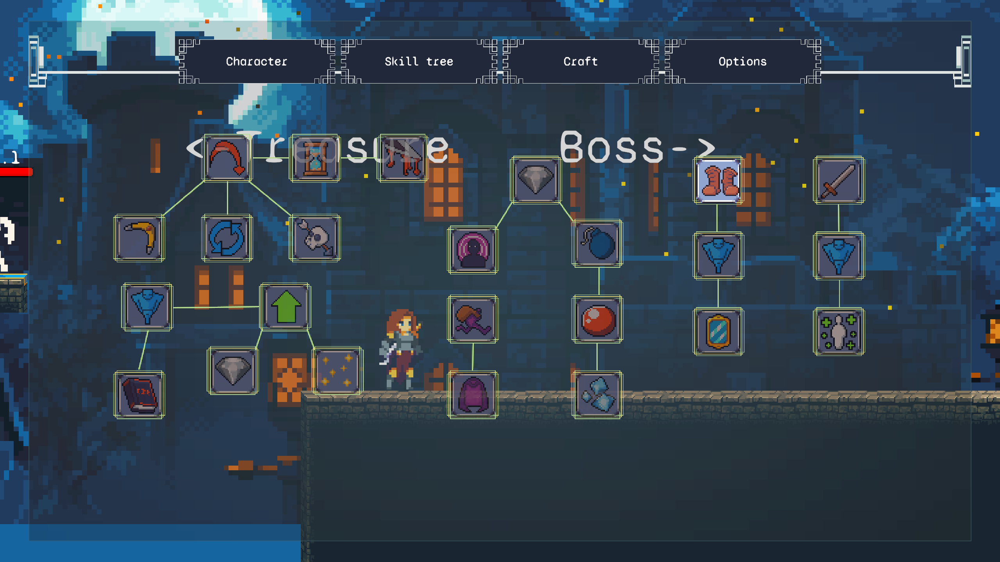

黄金国的低语 – 2D RPG Game on Unity
开发周期: 2 个月
一个在自学期间开发的完整2D RPG游戏，包含战斗、技能系统、装备、制作、存档等功能。
游戏项目链接:
itch game
核心功能与特色
技能系统
包含了冲刺、瞄准投掷、召唤黑洞、魔法水晶、召唤克隆、格挡攻击以及许多独特被动在内的技能。
拥有一个技能管理器以 支持 冷却, 伤害, 和效果时间等数值的模块化管理。
附带了一个功能化的技能树系统，支持技能先后解锁规则，并可DIY解锁顺序。

装备 & 物品系统
护甲, 武器, 护符, 和药水.
一切皆可支持动态属性修改和添加/删减独特的物品效果.
包含战利品掉落和制作系统.
UI 系统
属性, 技能树, 制作, 选项, 提示信息, 背包, 和装备.
血条, 冷却时间, 金钱显示.
可交互的装备界面用于装备/卸下物品.
主菜单和场景切换.
存档 & 加载
基于检查点的存档系统。
加载完整的游戏状态，包括玩家属性、物品和位置。
环境 & 交互
通过粒子系统开发的拥有动态效果的环境系统，例如动态火雨。
使用碰撞检测实现环境交互，例如宝箱等。
角色 & 战斗系统
利用状态机实现的，完全动画驱动的战斗系统.
多种角色状态 : 闲置, 移动, 跳跃, 下落，攻击, 战斗, 死亡。
实时更新血条和金钱显示.
音频系统
自动播放背景音乐。
游戏内音频设置，包括音乐和音效音量。